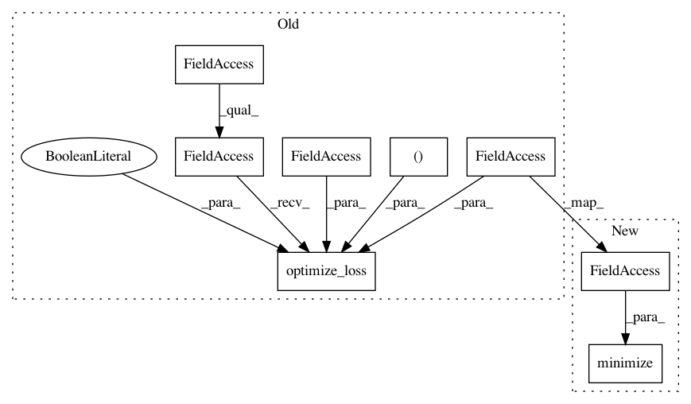

34ee92135551016c240139f7e078c09a583063fb,softlearning/algorithms/sac.py,SAC,_init_actor_update,#SAC#,249
Before Change
self._policy_optimizer = tf.train.AdamOptimizer(
learning_rate=self._policy_lr,
name="policy_optimizer")
policy_train_op = tf.contrib.layers.optimize_loss(
policy_loss,
self.global_step,
learning_rate=self._policy_lr,
optimizer=self._policy_optimizer,
variables=self._policy.trainable_variables,
increment_global_step=False,
summaries=(
"loss", "gradients", "gradient_norm", "global_gradient_norm"
) if self._tf_summaries else ())
self._training_ops.update({"policy_train_op": policy_train_op})
def _init_training(self):
After Change
learning_rate=self._policy_lr,
name="policy_optimizer")
policy_train_op = self._policy_optimizer.minimize(
loss=policy_loss,
var_list=self._policy.trainable_variables)
self._training_ops.update({"policy_train_op": policy_train_op})
def _init_training(self):
In pattern: SUPERPATTERN
Frequency: 3
Non-data size: 8
Instances
Project Name: rail-berkeley/softlearning
Commit Name: 34ee92135551016c240139f7e078c09a583063fb
Time: 2019-04-10
Author: kristian.hartikainen@gmail.com
File Name: softlearning/algorithms/sac.py
Class Name: SAC
Method Name: _init_actor_update
Project Name: rail-berkeley/softlearning
Commit Name: 34ee92135551016c240139f7e078c09a583063fb
Time: 2019-04-10
Author: kristian.hartikainen@gmail.com
File Name: softlearning/algorithms/sac.py
Class Name: SAC
Method Name: _init_critic_update
Project Name: rail-berkeley/softlearning
Commit Name: 34ee92135551016c240139f7e078c09a583063fb
Time: 2019-04-10
Author: kristian.hartikainen@gmail.com
File Name: softlearning/algorithms/sql.py
Class Name: SQL
Method Name: _create_td_update